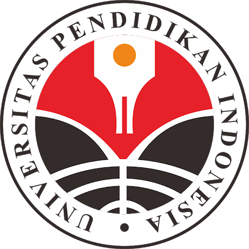

Universitas Pendidikan Indonesia
Kampus Daerah Serang
Nama : Novita Intan Purwitasari Haryono
Tempat,Tgl Lahir : Semarang, 02 November 2002
Alamat : Jl. Sindoro No. 6, Kota Tegal
Telephone : 0895380155791
Email : novitaintan377@upi.edu
TENTANG SAYA
Saya adalah mahasiswa Universitas Pendidikan Indonesia Kampus Daerah Serang.
Saat ini saya sedang menempuh pendidikan strata satu di program studi sistem
informasi kelautan, yang nantinya setelah lulus dari prodi ini akan mendapatkan
gelar S.Si (Sarjana Sistem Informasi) .
PENDIDIKAN
2009 - 2014 : SDN 2 Ambalresmi, Kebumen, Jawa Tengah
2015 - 2017 : SMPN 10 Kota Tegal, Jawa Tengah
2018 - 2020 : SMAN 4 Kota Tegal, Jawa Tengah
2020 - sekarang : Universitas Pendidikan Indonesia
PENGALAMAN ORGANISASI
2016 - 2017 : Ketua Dewan Penggalang SMPN 10 Tegal